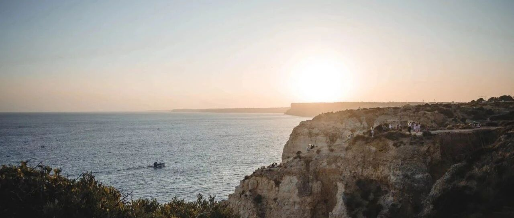

收钱不手软~
出门办事，路途上码个简篇。
几天前割了美股的贝壳找房，跌跌不休，即便此前两年我不断做T，想借此回本，但还是止不住一直亏损。去年下半年以来，市场又开始恶化，反映到贝壳股票上，就是股价持续下跌。
我实在没有那个精力和心神去消耗在这烂玩意上，索性割肉，一了百了，起码能有个好的心情，把精力放在值得的事情上。割完后，实际总亏损127W美刀。
以后不会再碰中概股了，以前是看好这些企业的成长，但现在，经历多了，我就不想再碰这些。太多的变数，一个行业可能因为一张纸就消失的环境，实在让人没有安全感。
英伟达一度站上820美元，我按原计划在807出了一部分，现在持有的英伟达占总仓位的35%出头，成本降低到97美元。
英伟达去年和今年涨得很疯，人工智能GPT3.5的消息刚冒头不久，我一直觉得英伟达要起飞，于是观察了一段时间后，根据自己的判断逐步开始建仓，直到去年中旬都在大规模建仓。
之后一段时间，英伟达涨得太疯，我适度逢高减持。现在回头看，这个高，减持在了山腰。但往前看，现在成本这么低，我可以毫无压力地持有很长时间，不再去看它短期内的涨跌，而只需要看大势。
大饼今天站上5.55万美刀，我减持了一小部分，现在成本已经从1.3万美元降低到7500美元。二饼最近基本没动，仓位还是维持在3%，二饼的价格也已突破3200美元。
我这两年运势还不错，有点“收钱不手软”的样子，不枉为这波美元潮汐中准备了好几年。2020年底到22年初一直在强回款，没停过，很多重资产和没盈利的业务开始停掉、剥离，即便亏损也要砍掉。
人的行为，不过是自身认知在现实世界中的映射。
世界很残酷，起点都是娘胎，终点都是棺材，中间就是人生，钱是通行证。更现实的是，如果有钱，规矩是可以变通的；如果有权，规矩是为你服务的；如果你既没有钱，也没有权，规矩是为你量身定做的。
所以多赚钱总归是没什么错，当然，钱不是万能的，但能让人有底气去做很多自己想做的事。
我一直以很愉悦的心态去面对自己所做的事，去享受它，热爱它。对于短期内的事，可能会用悲观的态度去操作和指导自己的行为，比如股票的逢高减持；对于未来这种长期的事，我会用乐观的态度去面对，无论它怎么变，我始终都有选择，如此，就够了。
让自己始终处于有选择的境地，这就是我想做的事。